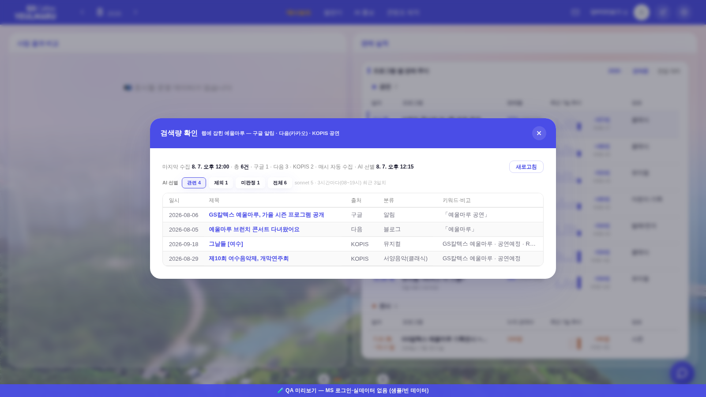
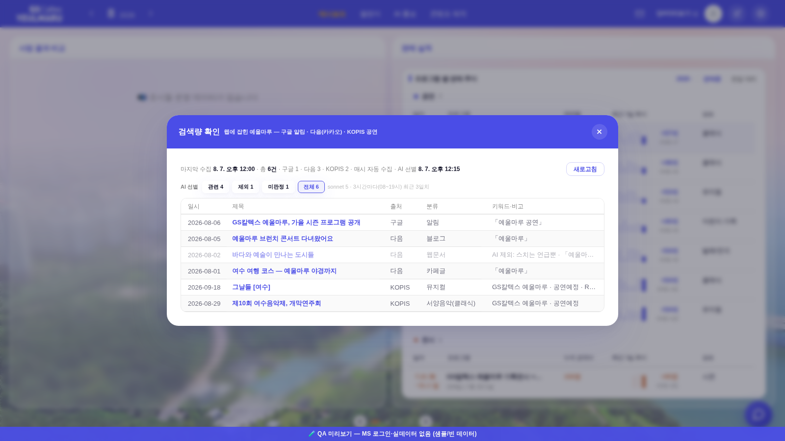
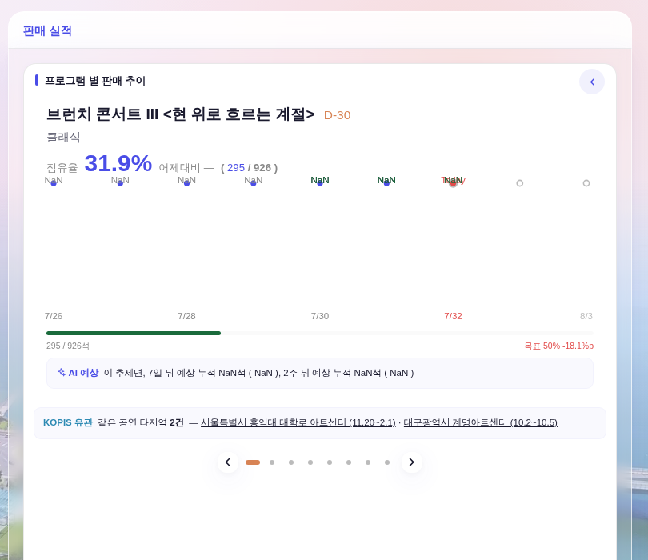

지시(운영자): 「3일 이내 올라온 것 중 예울마루와 관련된거를 oauth 계정 배선을 통해서 sonnet 5가 3시간마다 걸러내게. (밤 7~오전 8)에는 멈춤 … 관련 없는것도 있어서 관련된 것만 추릴 수 있는지」 · 「KOPIS 공연은 공연 상세페이지 이거(판매 추이 상세) 아래쪽에 유관된 타지역 공연이 있는지 확인해서 알려주게 해줘」.
화면 = QA 진입로(?qa=admin) + 결정적 목(tools/qa_mock_ops.mjs) · 실데이터·PII 미접촉. 상세 카드의 NaN·7/32는 목 데이터의 가짜 날짜 산물(기존 기지 사항 · 이번 축과 무관).
| 축 | 내용 |
|---|---|
| 엔진 | Worker의 기존 구독 OAuth 배선(claudeText) 그대로 — 예울이 채팅과 같은 키(ANTHROPIC_AUTH_TOKEN), 추가 발급·추가 비용 0. 모델 = claude-sonnet-5(effort low · 변수 MONITOR_JUDGE_MODEL로 교체 가능) |
| 시각 | 크론이 KST 8시·11시·14시·17시의 :15 틱에 실행 = 3시간 간격 + 밤 7시~오전 8시 멈춤 정확 충족. :15인 이유 = 같은 시각 :00의 수집 스캔과 KV 쓰기 경합 회피 |
| 대상 | 최근 3일(발행일 우선 · 수집시각 폴백) 중 미판정, 회당 ≤60건. KOPIS 갈래는 시설 필터로 수집돼 정의상 관련 = AI 없이 자동 관련 처리 |
| 판정 | 제목·분류·검색어만으로 관련(공연·전시·교육·행사·방문 후기)/무관(동명 장소·아파트·스치는 언급) — 항목에 rel(1/0)·relWhy(근거) 저장. 애매하면 관련으로(놓치는 쪽보다 안전). 알림 발화 0(Q28 유지 — 조회 화면 표식만) |
| 수동 | POST /api/monitor/judge = 지금 1회(크론과 같은 함수 1벌) |
전 = 어제 신설된 그 모달(칩 없음 · 260807_검색량확인_후_모달.png). 후 = AI 선별 칩 줄(관련·제외·미판정·전체 · 건수 동반)이 서고, 첫 진입 기본이 「관련」 — 지시 「관련된 것만」.

웹문서 행이 흐려지고 비고 맨 앞에 「AI 제외: 스치는 언급뿐」 — 무엇이 왜 걸러졌는지 전체 보기에서 그대로 보인다.

운영자가 가리킨 자리(AI 예상 브리핑 바로 아래)에 한 줄 — Worker가 KOPIS 공연DB에서 같은 제목을 찾아 예울마루 제외 타지역만 보여준다(지역·공연장·기간 · 원문 링크 · 24시간 캐시). 없으면 「타지역 일정 없음」으로 확인 자체를 알린다. 전 = 이 줄 자체가 없었다(신설).

| 층 | 내용 |
|---|---|
| Worker | smJudge(선별 + KV 저장) · smKopisRelated(핵심 제목 추출 → KOPIS 기간 목록 이름 대조 → 예울마루 제외 · 24h 캐시) · 크론 게이트(KST 8/11/14/17 :15) · 라우트 POST /api/monitor/judge·GET /api/monitor/kopis-related · feed 응답에 judge 동봉 |
| 프론트 | 검색량 확인 모달 — .ana-chip 정본 칩(AI 홍보 탭 기간 칩과 같은 관용구) + 제외 행 흐림·사유 · 판매 추이 상세 — .srail-fc 정본(AI 예상 줄과 같은 부품 · 라벨 색만 --c5) · 컨테이너는 차트 폭 수렴 재그림 밖이라 생존 |
| 주의 | KOPIS shprfnm 파라미터는 명세 미확정(prfplccd와 같은 상황) — 무시돼 전 목록이 와도 로컬 이름 대조가 최종 필터라 결과 동일. 이름 대조 = 정규화 후 동일 또는 4자 이상 포함(동명 오탐 억제) |
관련 4 · 제외 1 · 미판정 1 · 전체 6 · 요약줄에 AI 선별 시각 — 정확.node --check src/index.js · pre-commit 스모크 전건.라이브 실증(머지 → Worker 자동 배포 뒤): POST /api/monitor/judge 1회로 실제 쌓인 글을 선별시키고, 실공연명으로 kopis-related를 확인한다 — 결과는 원장·보고에 병기.